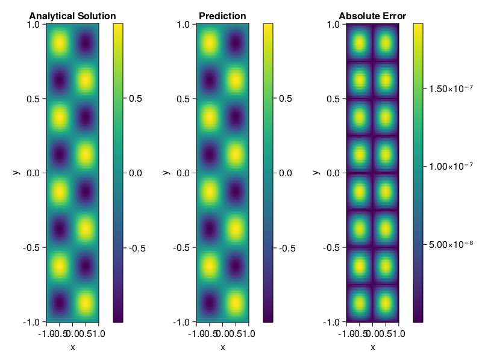

Helmholtz equation
Let us consider the Helmholtz equation in two space dimensions
\[\begin{aligned} &\Delta u(x, y)+k^{2} u(x, y)=q(x, y), \quad(x, y) \in \Omega:=(-1,1)^2 \\ &u(x, y)=0, \quad(x, y) \in \partial \Omega \end{aligned}\]
where
\[q(x, y)=-\left(a_{1} \pi\right)^{2} \sin \left(a_{1} \pi x\right) \sin \left(a_{2} \pi y\right)-\left(a_{2} \pi\right)^{2} \sin \left(a_{1} \pi x\right) \sin \left(a_{2} \pi y\right)+k^{2} \sin \left(a_{1} \pi x\right) \sin \left(a_{2} \pi y\right).\]
The excat solution is $u(x,y)=\sin{a_1\pi x}\sin{a_2\pi y}$. We chose $k=1, a_1 = 1$ and $a_2 = 4$.
using ModelingToolkit, IntervalSets, Sophon, Lux
using Optimization, OptimizationOptimJL
@parameters x,y
@variables u(..)
Dxx = Differential(x)^2
Dyy = Differential(y)^2
a1 = 1
a2 = 4
k = 1
q(x,y) = -(a1*π)^2 * sin(a1*π*x) * sin(a2*π*y) - (a2*π)^2 * sin(a1*π*x) * sin(a2*π*y) + k^2 * sin(a1*π*x) * sin(a2*π*y)
eq = Dxx(u(x,y)) + Dyy(u(x,y)) + k^2 * u(x,y) ~ q(x,y)
domains = [x ∈ Interval(-1,1), y ∈ Interval(-1,1)]
bcs = [u(-1,y) ~ 0, u(1,y) ~ 0, u(x, -1) ~ 0, u(x, 1) ~ 0]
@named helmholtz = PDESystem(eq, bcs, domains, [x,y], [u(x,y)])\[ \begin{align} \frac{\mathrm{d}}{\mathrm{d}y} \frac{\mathrm{d}}{\mathrm{d}y} u\left( x, y \right) + \frac{\mathrm{d}}{\mathrm{d}x} \frac{\mathrm{d}}{\mathrm{d}x} u\left( x, y \right) + u\left( x, y \right) =& - 166.78 \sin\left( 3.1416 x \right) \sin\left( 12.566 y \right) \end{align} \]
Note that the boundary conditions are compatible with periocity, which allows us to apply BACON.
chain = BACON(2, 1, 5, 2; hidden_dims = 32, num_layers=5)
pinn = PINN(chain) # call `gpu` on it if you want to use gpu
sampler = QuasiRandomSampler(300, 100)
strategy = NonAdaptiveTraining()
prob = Sophon.discretize(helmholtz, pinn, sampler, strategy)
@time res = Optimization.solve(prob, BFGS(); maxiters=1000)u: ComponentVector{Float64}(filters = (filter_1 = (bias = [-0.5022956020285445; -0.08981475935721585; … ; -0.9960682905196288; 0.16279906814739398;;]), filter_2 = (bias = [0.9139053202948585; -0.9651750357202791; … ; 1.2486591361099202; -0.7872820421213027;;]), filter_3 = (bias = [-0.49563163405806104; 0.06162181152924175; … ; -0.6347538647134918; 0.20392739704443918;;]), filter_4 = (bias = [-0.6704882895262164; 0.18208327204967065; … ; -0.15588625995095454; 0.09009113709992976;;]), filter_5 = (bias = [-0.13312949333344065; 0.5075222884092745; … ; -0.005989359152818142; 0.031235907665730527;;])), linear_layers = (layer_1 = (weight = [-0.10147453786451295 0.3277514828328081 … -0.3835143072375369 0.39612563155360686; 0.35310788141313393 0.21646000071317112 … 0.054457193173634844 0.10568848462313334; … ; -0.39807153882503743 0.16099855974205984 … 0.20392424942526224 -0.17846719424306856; 0.36642347983127116 0.01766946187339719 … -0.1037534796547555 -0.29201354860967316], bias = [0.020510195841923724; 0.005435600972501623; … ; 0.03712014024889117; -0.010984641577160583;;]), layer_2 = (weight = [0.37760434538636023 0.3345641863402317 … 0.04994079479039219 -0.3775472626747093; 0.316616352377093 -0.35414394014965905 … 0.17339921746404904 -0.0572446359164442; … ; -0.15020397551224013 -0.2696673920455159 … 0.3349567166102215 -0.06505442799429371; 0.3275459996971261 -0.29717692203063784 … 0.046601685200551565 0.1660434393772667], bias = [0.007722801364387434; 0.008048247457727637; … ; 0.016791844952295333; -0.026460915002014196;;]), layer_3 = (weight = [-0.09091944721996469 -0.3624886393436543 … 0.11688831164162503 -0.22836243249846921; 0.1335109754849028 -0.29606864203908495 … 0.2712244068817355 0.2260840962070942; … ; 0.35529194812358383 0.29804995583799193 … 0.09022604798866743 -0.38274387624012146; -0.3857146360122589 0.24753806436973755 … -0.32699728026291863 0.11309955807357734], bias = [0.005947503401518619; -0.015225837027992507; … ; -0.0037771004112796104; -0.010072660212411566;;]), layer_4 = (weight = [0.0702472732339764 0.07414738275181813 … -0.033892300293571015 -0.335683498199848; 0.44033848588976937 -0.28445278223969034 … 0.28839256013987646 0.13084582136447714; … ; 0.24135843329345663 0.3699753246598247 … -0.023223251233492868 0.29442209395937674; 0.10034120091875674 0.24849042786684183 … 0.09134656897174814 -0.16787251355495997], bias = [-0.00685273390056071; 0.007177568807297103; … ; -0.0002383458323774354; -0.001900037022057968;;])), output_layer = (weight = [0.03864536323393908 0.10037182480272082 … 0.05097651271274242 -0.14083549723366431], bias = [0.0690659007316256;;]))Let's plot the result.
phi = pinn.phi
xs, ys= [infimum(d.domain):0.01:supremum(d.domain) for d in domains]
u_analytic(x,y) = sinpi(a1*x)*sinpi(a2*y)
u_real = [u_analytic(x,y) for x in xs, y in ys]
phi_cpu = cpu(phi) # in case you are using GPU
ps_cpu = cpu(res.u)
u_pred = [sum(phi_cpu(([x,y]), ps_cpu)) for x in xs, y in ys]
using CairoMakie
axis = (xlabel="x", ylabel="y", title="Analytical Solution")
fig, ax1, hm1 = heatmap(xs, ys, u_real, axis=axis)
Colorbar(fig[:, end+1], hm1)
ax2, hm2= heatmap(fig[1, end+1], xs, ys, u_pred, axis= merge(axis, (;title = "Prediction")))
Colorbar(fig[:, end+1], hm2)
ax3, hm3 = heatmap(fig[1, end+1], xs, ys, abs.(u_pred-u_real), axis= merge(axis, (;title = "Absolute Error")))
Colorbar(fig[:, end+1], hm3)
fig